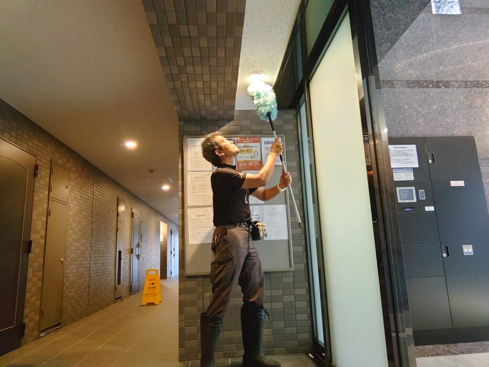
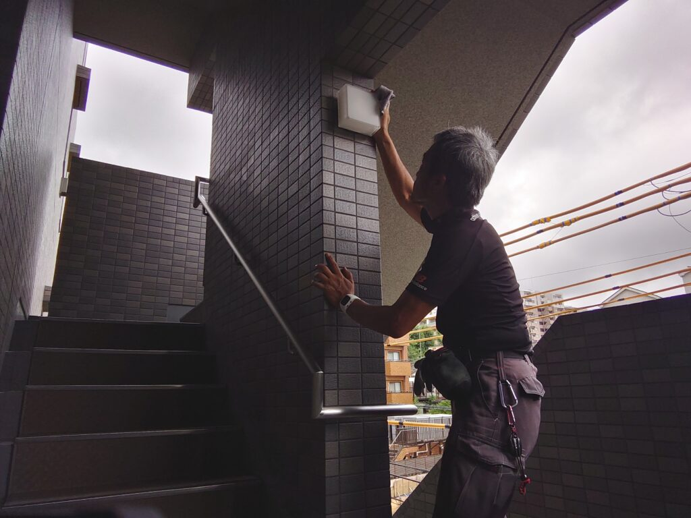
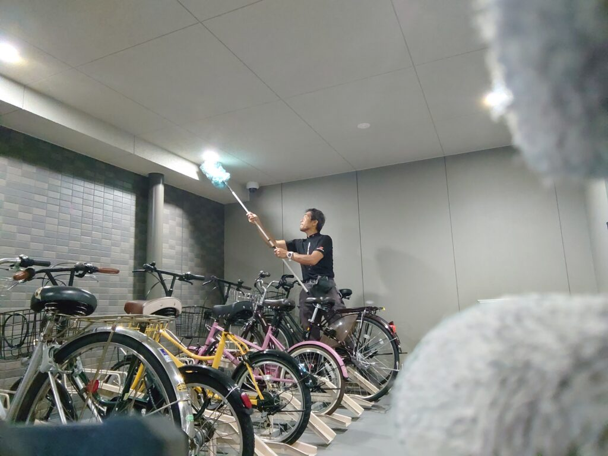
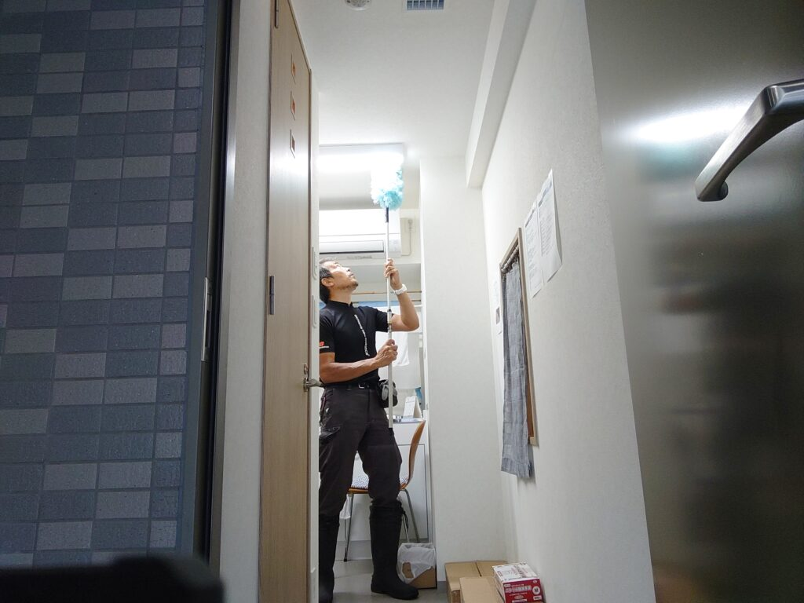
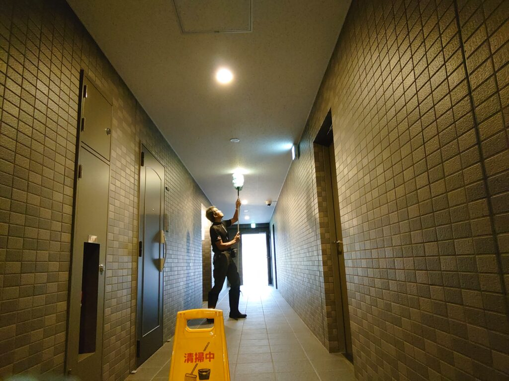
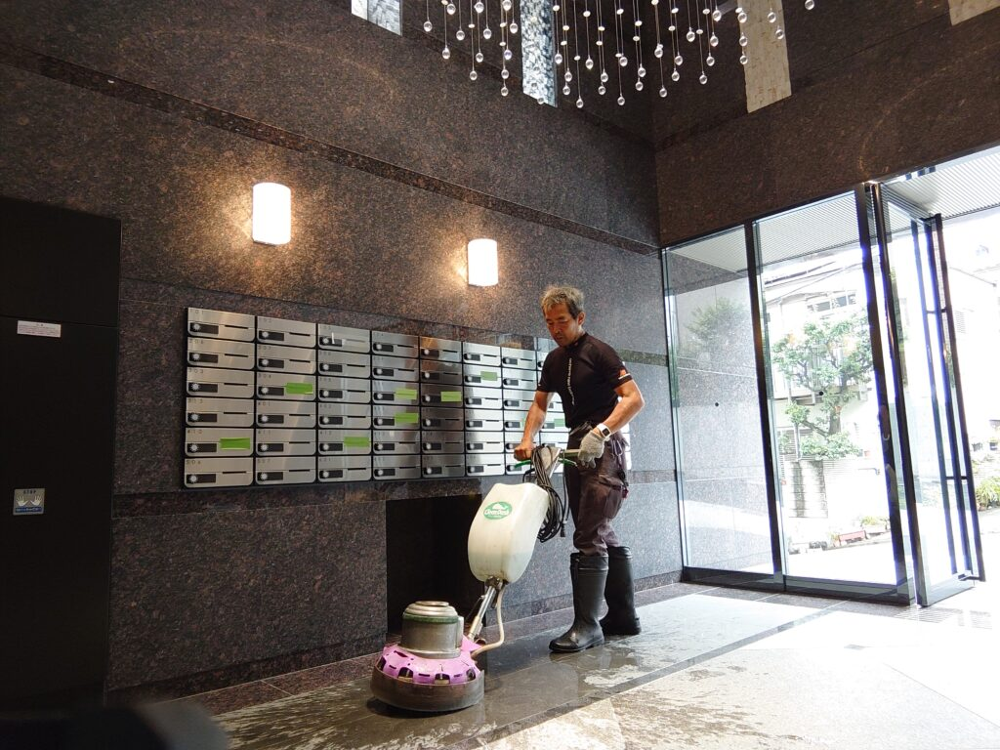
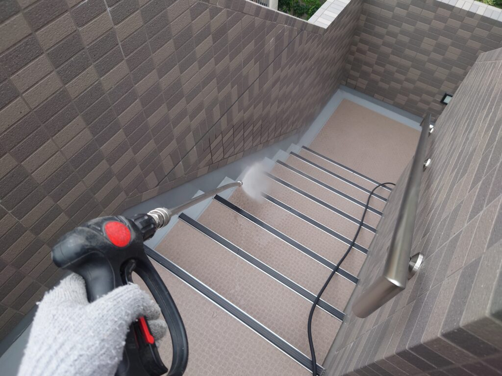
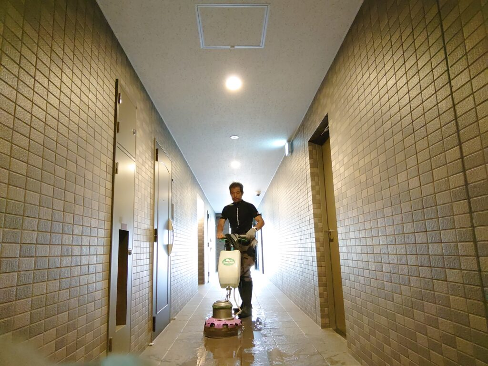

練馬区 法人マンションのお客様マンション共用部定期清掃、照明特別清掃をしました!
東京都練馬区 法人マンションのお客様の共用部定期清掃と、年一回の照明特別清掃を実施しました。マンション共用部はまだ2年目で綺麗めですが、外階段、エントランス、アプローチはどうしても人の出入りと風雨のためにすぐ汚れてしまいます。ポリッシャー洗浄クリーニングと高圧洗浄クリーニングを適材適所で駆使して綺麗に仕上げます。照明器具は、1年分の塵と汚れが堆積していますので、拭き取りとフラワーによる除塵クリーニングを満遍なく、細かく実施します！

エントランス入口の照明器具をフラワーで除塵クリーニングします。

外階段の照明器具は拭き取りクリーニングをします。

駐輪場の照明器具は、埃と蜘蛛の巣がありますので、フラワーによる除塵クリーニングを実施します。





マンションオーナー様物件、マンション管理組合様物件、それぞれ多くのマンション定期清掃、特別清掃を実施しております。定期清掃は毎月実施のタイプから、隔月タイプ、四半期タイプ、半期タイプがございます。特別清掃は、年末年始の大掃除タイプ、四半期タイプ、半期タイプがございます。定期清掃のターゲットは、共用部床面機械洗浄クリーニング、外階段高圧洗浄クリーニング、エントランス、アプローチ機械洗浄クリーニング、窓ガラスプロフェッショナルクリーニング、駐輪場高圧洗浄クリーニング、ゴミ置き場高圧洗浄クリーニングなど、ご希望とお客様ロケーションに沿ってプランニングしております。料金は30,000〜規模とご要望とご予算を加味してお客様と決めさせて頂いております。特別清掃は、年末年始の大掃除タイプ（照明器具、灯具分解洗浄。排水溝、排水管高圧洗浄、側溝高圧洗浄、屋上高圧洗浄、壁高圧洗浄）などお客様のご要望に合わせてプランニングしております。料金は25,000〜規模とご要望とご予算を加味してお客様と決めさせて頂いております。DAIZENクリーニングメソッドを駆使したマンション清掃は、ハウスクリーニングで培ったテクニックとナレッジを存分に活かした清掃技術を用いて実施します。例えば高圧洗浄機のノズル、ガン、ホースなどの細かなEquipment（装置）ひとつをとっても全く他の清掃会社とは異なり、使いやすく極めて有効性の高い器具を徹底的に比較検証して勝ち残った物ばかりを使用しております。使用する専用薬剤も然りで、DAIZENハウスクリーニングで培った見識、ナレッジ、ベンチマークで得た最も有効性の高い薬剤を用いて適材適所に最適使用しております。ぜひDAIZENのマンション清掃技術をお試し下さい、宜しくお願いいたします。